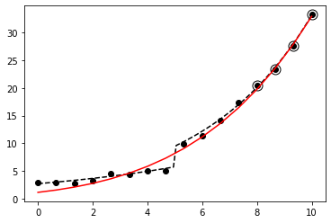

Ejemplo básico de aplicación¶
30 min | Ultima modificación: Marzo 26, 2020
Preparación
[1]:
import math
import matplotlib.pyplot as plt
import numpy as np
%matplotlib inline
[2]:
#
# Proceso generador de datos
#
def f(x):
y = [math.exp(0.15 * u + 1) if u < 5 else math.exp(0.25 * u + 1) for u in x]
return np.array(y)
[3]:
#
# Generación de la muestra de datos
#
np.random.seed(123456)
index = list(range(12))
x_real = np.linspace(start=0, stop=10, num=100)
x_data = np.linspace(start=0, stop=10, num=16)
x_fit = x_data[index]
x_test = np.delete(x_data, index)
d_orig_real = f(x_real)
d_orig_data = f(x_data) + np.random.normal(0, 0.4, len(x_data))
d_orig_fit = d_orig_data[index]
d_orig_test = np.delete(d_orig_data, index)
# muestra usada para evaluar la generalización
plt.plot(x_data, d_orig_data, "o", color="black")
plt.plot(x_real, d_orig_real, "--", color="black")
plt.plot(x_test, d_orig_test, "o", color="black", fillstyle="none", markersize=11)
plt.show()

Modelado¶
Transformación de Box-Cox.
[4]:
def boxcox(z, Lambda):
if Lambda == 0:
return np.log(z)
return (np.power(z, Lambda) - 1.0) / Lambda
#
# Función inversa de Box-Cox
#
def boxcox_inv(z, Lambda):
if Lambda == 0:
return np.exp(z)
return np.power(Lambda * z + 1, 1.0 / Lambda)
Modelo de regresión.
\[y_p = g(x_p) = w_0 + w_1 x_p\]
Función de pérdida.
\[\text{SSE}(w) = \sum_p [d_p - g(x_p)]^2\]
[5]:
def SSE(observed, forecast):
forecast_fit = forecast[index]
forecast_test = np.delete(forecast, index)
observed_fit = observed[index]
observed_test = np.delete(observed, index)
SSE_fit = sum(np.power(observed_fit - forecast_fit, 2))
SSE_test = sum(np.power(observed_test - forecast_test, 2))
return SSE_fit, SSE_test
Gradiente de la función de pérdida.
\[\frac{\partial}{\partial w}\text{SSE}(w) = \sum_p -2 \times [d_p - g(x_p)] \times \frac{\partial}{\partial w} g(x_p) = -2 \sum_p e_p \times \frac{\partial}{\partial w} g(x_p)\]
\[\frac{\partial}{\partial w} g(x_p) = \frac{\partial}{\partial w} \left(
w_0 + w_1 * x_p
\right) = [1, x_p]\]
[6]:
def gSSE(observed, forecast):
forecast_fit = forecast[index]
forecast_test = np.delete(forecast, index)
observed_fit = observed[index]
observed_test = np.delete(observed, index)
e_fit = observed_fit - forecast_fit
grd = [[1, u] for u in x_data]
grd = [u for i, u in enumerate(grd) if i in index]
grd = [[-2.0 * e_fit[i] * u for u in g] for i, g in enumerate(grd)]
grd = [[g[icol] for g in grd] for icol in range(len(w))]
grd = [sum(u) for u in grd]
return grd
SGD.
\[\mathbf{w}_k = \mathbf{w}_{k-1} - \mu \frac{\partial}{\partial \mathbf{w}} \text{SSE}(\mathbf{w}_{k-1})\]
[7]:
def mejora(w, mu, observed, forecast):
grd = gSSE(observed, forecast)
w = [u - mu * g for u, g in zip(w, grd)]
return w
Implementación usando Early Stopping.
[8]:
w_opt = None
Lambda_opt = None
y_orig_opt = None
SSE_orig_opt = None
for Lambda in np.linspace(start=-0.99, stop=1.5, num=101):
# Transforma la variable de salida
d_transf_data = boxcox(d_orig_data, Lambda)
# tasa de aprendizaje
alpha = 0.000001
#
# Coeficientes iniciales. La salida es cero
# por ser un modelo lineal
#
w = np.array([0.0, 0.0])
y_transf_opt = np.array([0] * len(d_orig_data))
#
# Solo para el proceso de entrenamiento
#
SSE_transf_test_previous = None
for epoch in range(10000):
y_transf_data = w[0] + w[1] * x_data
w = mejora(w, alpha, d_transf_data, y_transf_data)
SSE_transf_fit, SSE_transf_test = SSE(d_transf_data, y_transf_data)
if (
SSE_transf_test_previous is None
or SSE_transf_test_previous > SSE_transf_test
):
SSE_transf_test_previous = SSE_transf_test
y_transf_opt = y_transf_data
else:
# aumenta el error de prueba
break
y_orig_data = boxcox_inv(y_transf_opt, Lambda)
SSE_orig_fit, _ = SSE(d_orig_data, y_orig_data)
if SSE_orig_opt is None or SSE_orig_fit < SSE_orig_opt:
y_orig_opt = y_orig_data
SSE_orig_opt = SSE_orig_fit
Lambda_opt = Lambda
print("{:7.3f} {:9.5f}".format(Lambda, SSE_orig_opt))
else:
break
print("{:7.3f} {:7.3f}".format(Lambda, SSE_orig_opt))
plt.plot(x_data, d_orig_data, "o", color="black")
plt.plot(x_real, d_orig_real, "--", color="black")
plt.plot(x_test, d_orig_test, "o", color="black", fillstyle="none", markersize=11)
plt.plot(x_data, y_orig_opt, "-", color="red")
plt.show()
/usr/local/lib/python3.6/dist-packages/ipykernel_launcher.py:12: RuntimeWarning: invalid value encountered in power
if sys.path[0] == '':
-0.990 455.35718
-0.965 448.17079
-0.940 440.87867
-0.915 433.06143
-0.890 425.14793
-0.865 416.93121
-0.841 408.19681
-0.816 399.39521
-0.791 390.31902
-0.766 380.75698
-0.741 370.95080
-0.716 360.92171
-0.691 350.46700
-0.666 339.84124
-0.641 329.07482
-0.616 317.97725
-0.592 306.58984
-0.567 294.95858
-0.542 283.13375
-0.517 271.16922
-0.492 258.91714
-0.467 246.65164
-0.442 234.43375
-0.417 221.95211
-0.392 209.48799
-0.367 197.12342
-0.343 184.77608
-0.318 172.54816
-0.293 160.53803
-0.268 148.56815
-0.243 136.90490
-0.218 125.53540
-0.193 114.47293
-0.168 103.75411
-0.143 93.43485
-0.118 83.66107
-0.094 74.28272
-0.069 65.54861
-0.044 57.33327
-0.019 49.74846
0.006 42.83310
0.031 36.60638
0.056 31.08019
0.081 26.28173
0.106 22.25844
0.131 19.00937
0.155 16.56770
0.180 14.93968
0.205 14.34356
0.230 14.344

[9]:
print(" Obs. Pron.")
print("------------------")
for a, b in zip(d_orig_data, y_orig_opt):
print("{:7.3f} {:7.3f}".format(a, b))
Obs. Pron.
------------------
2.906 1.147
2.891 1.567
2.716 2.101
3.215 2.770
4.540 3.598
4.412 4.611
5.001 5.840
5.056 7.316
9.968 9.074
11.341 11.152
14.194 13.592
17.431 16.438
20.374 19.739
23.446 23.547
27.616 27.916
33.224 32.906